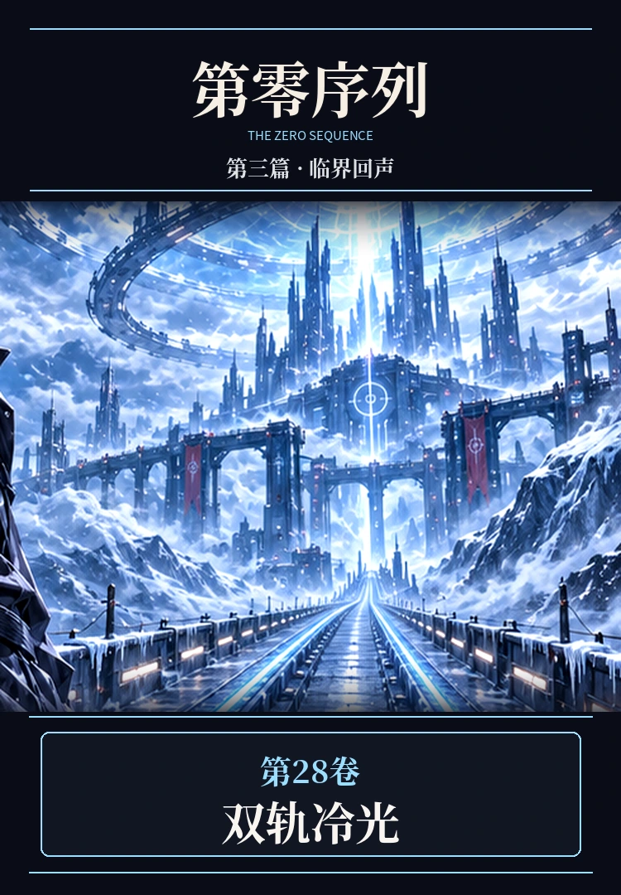

PART THREE · VOLUME 28 · FULL 10 CHAPTERS
第二十八卷《双轨冷光》

现实冷链试运营接连遭遇错误派单与停电，万界北境镜霜驿道也传来旧塔钟响与失踪驿工的线索。顾长渊在两条道路上学习信任伙伴，并正面迎战霜镜巡狩者。
PART THREE · VOLUME 28 · FULL 10 CHAPTERS

现实冷链试运营接连遭遇错误派单与停电，万界北境镜霜驿道也传来旧塔钟响与失踪驿工的线索。顾长渊在两条道路上学习信任伙伴，并正面迎战霜镜巡狩者。